ENSAE Paris · Projet Python
Incendies de forêt en PACA : qui est exposé, et les secours peuvent-ils arriver à temps ?
Nous croisons 1,26 million d’adresses, plus de 100 000 forêts, 460 casernes et dix ans d’incendies pour mesurer deux choses : l’exposition des habitations au contact de la forêt, et l’accessibilité des forêts pour les sapeurs-pompiers.
Khadidiatou Coulibaly · Abdou Hamid Alagbe
Sous la supervision de M. Daniel Marin
Contexte
Une région où tout se prête au feu
Forêts et garrigues omniprésentes, étés chauds et secs balayés par le mistral, changement climatique qui allonge la saison des feux : la région Provence-Alpes-Côte d’Azur est l’une des plus exposées de France.
À ce risque naturel s’ajoute une forte pression humaine : plus de cinq millions d’habitants, une urbanisation qui grignote les lisières et une fréquentation touristique intense. Or la grande majorité des feux sont d’origine humaine.
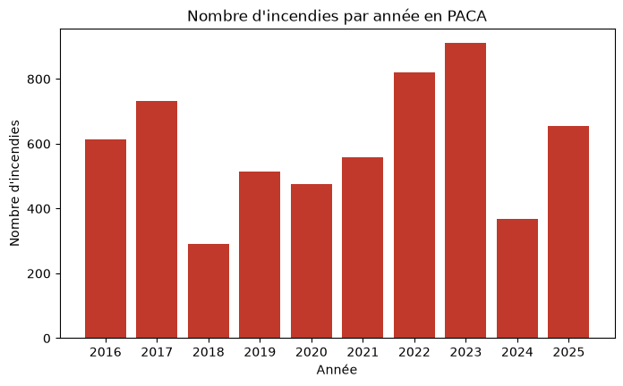
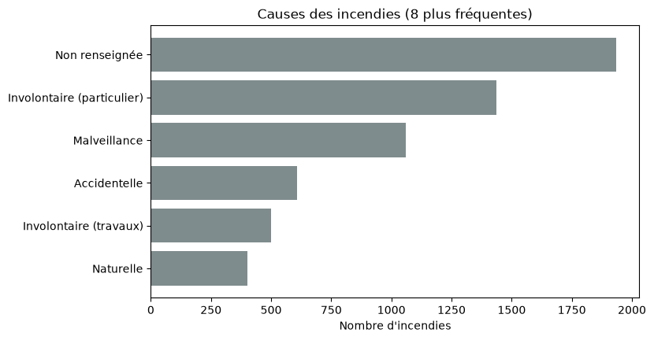
Deux questions pour protéger les populations
- Partie 1. Quelles habitations vivent au contact direct de la forêt, et à quel point sont-elles exposées ?
- Partie 2. Les sapeurs-pompiers peuvent-ils atteindre rapidement les forêts, et les communes les plus touchées sont-elles bien desservies ?
Données et méthode
Quatre sources ouvertes, deux analyses spatiales
Base Adresse Nationale (adresses), occupation du sol 2019 de la région Sud (forêts, exo_19 = "BD FORET"), OpenStreetMap (casernes, via Overpass Turbo) et BDIFF (incendies). Toutes les distances sont calculées en Lambert-93 (EPSG:2154).
Partie 1 · Interface habitat-forêt
Distance à la lisière
Pour chaque adresse, distance à la forêt la plus proche (négative à l’intérieur d’un massif).
Bandes et typologie
Cinq bandes de distance, et habitat isolé, groupé ou dense selon le voisinage dans un rayon de 50 m.
Score d’exposition
De 0 à 1 : moitié proximité de la forêt, moitié part de forêt dans un rayon de 100 m.
Confrontation aux feux
Par commune : tests statistiques et modèle de comptage des incendies 2010-2025.
Partie 2 · Accessibilité des secours
Un point par forêt
Chaque polygone forestier est résumé par un point situé à l’intérieur.
Caserne la plus proche
Jointure spatiale au plus proche voisin avec 460 casernes (PACA + 20 km).
Délai théorique
Distance à vol d’oiseau × 1,3 (détour), à 50 km/h.
Typologie
Délais moyens par commune, croisés avec le nombre d’incendies.
L’interface habitat-forêt
Où vivent les habitants exposés au feu, et à quel point leur logement est-il au contact de la forêt ?
1.1 · Le territoire
Des habitants sur le littoral, des forêts partout ailleurs
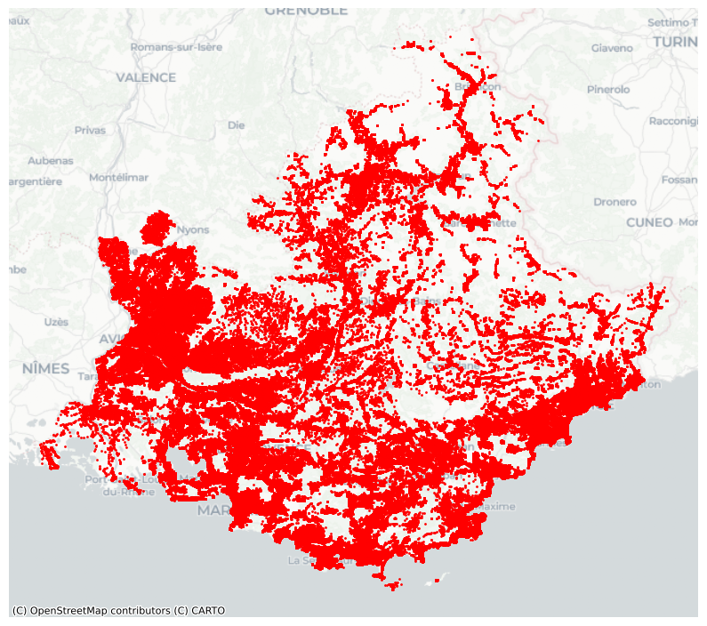
Les 1,26 million d’adresses analysées
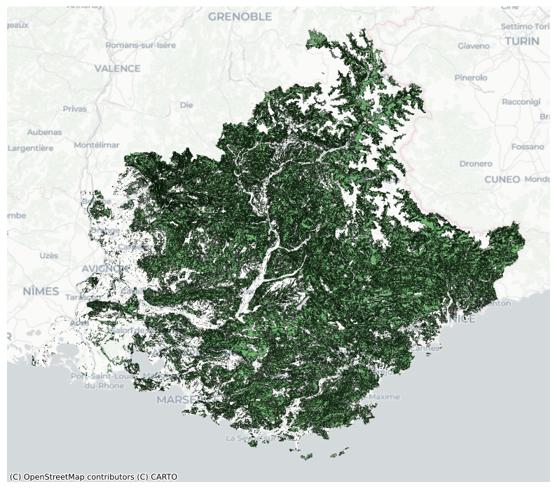
Les forêts (occupation du sol 2019, BD Forêt)
- Les adresses se concentrent sur la bande côtière et la vallée du Rhône (Marseille, Toulon, Nice, Avignon).
- La forêt couvre une grande partie du territoire, en particulier dans le Var et l’arrière-pays alpin : les deux se rencontrent sur de longues lisières.
1.2 · Distance à la forêt
Une adresse sur quatre en interface habitat-forêt
| Distance à la lisière | Adresses | Part |
|---|---|---|
| Dans la forêt | 29 761 | 2,4 % |
| À moins de 50 m | 154 786 | 12,3 % |
| De 50 à 100 m | 145 328 | 11,5 % |
| De 100 à 200 m | 202 494 | 16,1 % |
| Au-delà de 200 m | 727 755 | 57,8 % |
| Total | 1 260 124 | 100 % |
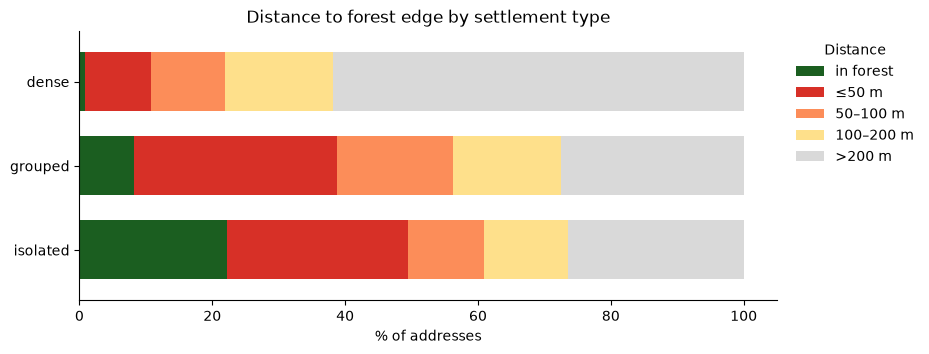
- L’habitat est très majoritairement dense (88 % des adresses), contre 7 % groupé et 5 % isolé.
- Mais l’habitat isolé est massivement exposé : 22 % des habitations isolées sont dans la forêt, et 61 % à moins de 100 m.
- En habitat dense, seules 0,8 % des adresses sont en forêt et 22 % à moins de 100 m.
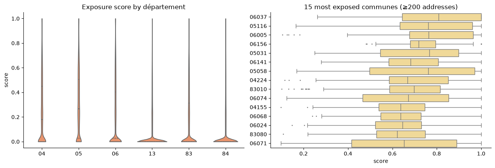
1.3 · Score d’exposition
Une exposition faible en moyenne, extrême par endroits
- Le score vaut 1 pour une habitation en forêt et décroît jusqu’à 0 à 200 m de la lisière.
- Dans tous les départements, la plupart des adresses ont un score proche de 0 : l’exposition est concentrée sur une minorité d’habitations.
- Les communes les plus exposées (au moins 200 adresses) sont surtout dans l’arrière-pays des Alpes-Maritimes (06) et des Hautes-Alpes (05).
1.4 · Cartes interactives
Explorer l’interface habitat-forêt
La carte des « zones d’ombre » montre les habitations à la fois isolées et fortement exposées (score ≥ 0,5) : les plus difficiles à protéger.
La carte en carreaux est lourde (environ 11 Mo) : son chargement peut prendre quelques secondes.
1.5 · Exposition et incendies
Être exposé ne veut pas dire brûler plus souvent
Nous avons confronté, commune par commune, l’exposition des habitations et le nombre d’incendies de 2010 à 2025 (communes comptant au moins 50 ha de forêt).
Modèle binomial négatif : quand la densité est multipliée par e (≈ 2,7), le nombre de feux augmente de 24 % (IRR = 1,24 ; IC 95 % : 1,19-1,30).
À densité et département égaux, les communes les plus exposées connaissent moins de feux (IRR = 0,19 ; IC 95 % : 0,12-0,31).
La présence de feux dépend de la densité d’habitat (χ² = 31,6 ; p < 0,001), avec un lien modéré.
Le score moyen ne prédit pas les communes touchées (0,38, sous le hasard), contre 0,61 pour la seule surface forestière.
L’accessibilité des secours
Combien de temps faut-il, au minimum, pour qu’une caserne atteigne chaque forêt de la région ?
2.1 · Les casernes
460 casernes, concentrées sur le littoral
- Les casernes suivent la population : Bouches-du-Rhône (98), Alpes-Maritimes (84) et Var (72) en tête.
- Les départements alpins en comptent moins pour des territoires forestiers bien plus vastes : 46 dans les Alpes-de-Haute-Provence, 38 dans les Hautes-Alpes.
- 72 casernes situées à moins de 20 km de la région sont aussi retenues, pour éviter l’effet de bord.
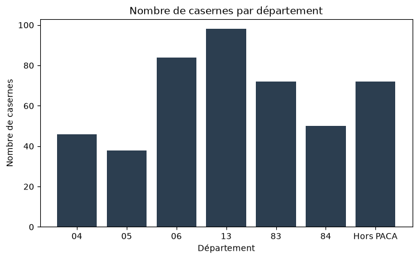
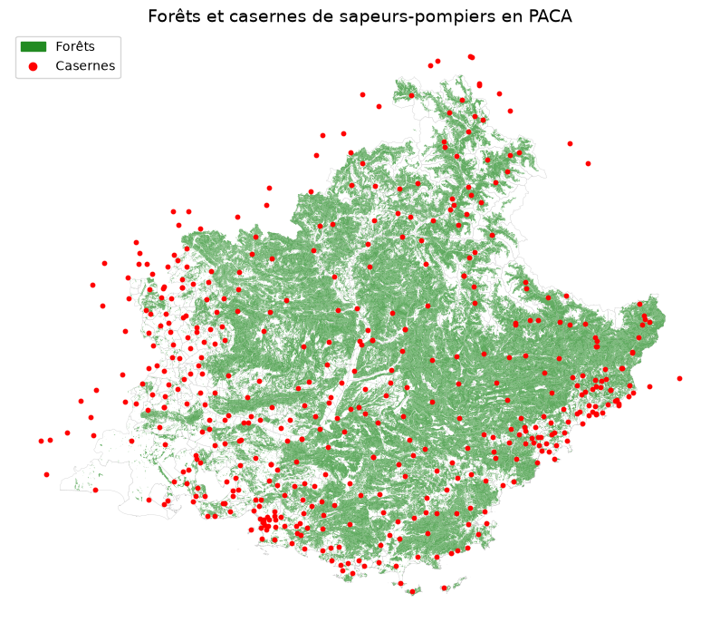
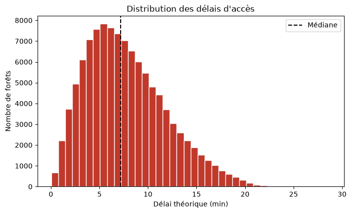
2.2 · Les délais d’accès
La plupart des forêts sont à moins de 10 minutes
Les départements alpins sont les plus éloignés des secours
| Département | Forêts | Délai moyen | Délai médian | Délai max |
|---|---|---|---|---|
| 04 · Alpes-de-Haute-Provence | 29 167 | 9,2 min | 8,8 min | 22,9 min |
| 05 · Hautes-Alpes | 23 006 | 8,6 min | 8,0 min | 28,8 min |
| 84 · Vaucluse | 10 115 | 7,2 min | 6,4 min | 20,6 min |
| 83 · Var | 20 086 | 7,0 min | 6,7 min | 18,5 min |
| 06 · Alpes-Maritimes | 16 025 | 6,7 min | 6,2 min | 20,2 min |
| 13 · Bouches-du-Rhône | 11 099 | 5,6 min | 5,2 min | 21,9 min |
2.3 · Cartes interactives
Les délais, commune par commune
Survolez une commune pour afficher ses chiffres, et cochez ou décochez les couches dans le menu en haut à droite.
2.4 · Incendies et délais
Plus de feux là où les casernes sont proches
Corrélation de Spearman entre le nombre d’incendies et le délai moyen par commune.
- Les communes qui brûlent le plus sont plutôt bien desservies : les feux naissent près des zones habitées, là où sont aussi les casernes.
- Spearman travaille sur les rangs : il résiste aux quelques communes qui concentrent énormément de feux.
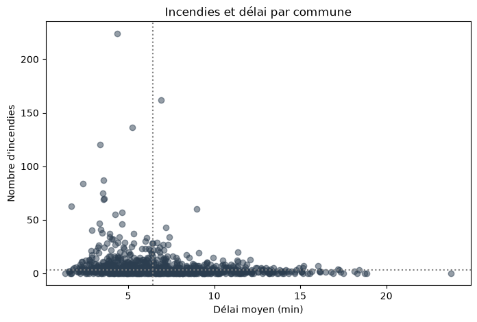
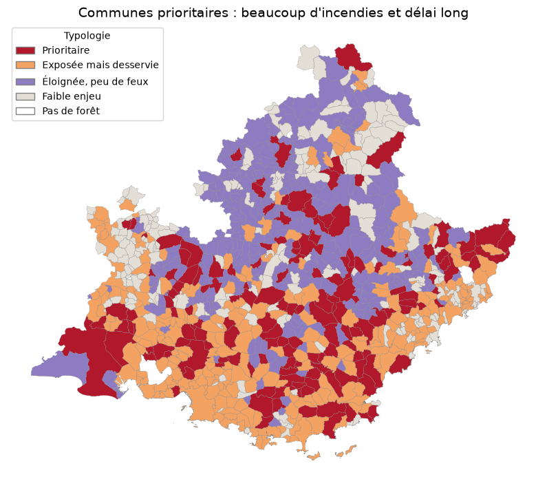
2.5 · Typologie des communes
154 communes à surveiller en priorité
Une commune est prioritaire quand elle a à la fois plus d’incendies (plus de 3 feux) et un délai moyen plus long (plus de 6,4 min) que la médiane des communes.
Top 10 des communes prioritaires
| Commune | Dép. | Incendies | Forêts | Délai moyen | Délai max |
|---|---|---|---|---|---|
| Aix-en-Provence | 13 | 162 | 582 | 6,9 min | 13,1 min |
| Lançon-Provence | 13 | 60 | 213 | 9,0 min | 13,3 min |
| Cabriès | 13 | 43 | 138 | 7,2 min | 11,5 min |
| Le Rove | 13 | 34 | 43 | 7,4 min | 8,8 min |
| Roquebrune-sur-Argens | 83 | 29 | 321 | 6,7 min | 11,9 min |
| Jouques | 13 | 28 | 397 | 6,4 min | 12,0 min |
| Saint-Chamas | 13 | 27 | 87 | 7,3 min | 11,8 min |
| Digne-les-Bains | 04 | 27 | 594 | 7,0 min | 14,5 min |
| Courmes | 06 | 24 | 39 | 6,8 min | 8,7 min |
| Saint-Cannat | 13 | 22 | 103 | 6,7 min | 9,4 min |
Synthèse
Un quart des adresses est en interface habitat-forêt, et 61 % des habitations isolées.
73 % des forêts sont à moins de 10 minutes d’une caserne, mais les départements alpins sont plus éloignés.
Les deux parties montrent que les feux se concentrent près des zones habitées et des casernes, loin des habitations les plus exposées.
154 communes cumulent feux fréquents et délais longs, et les « zones d’ombre » isolées méritent une attention particulière.
Limites
Ce que nos estimations ne disent pas
Pondérations du score
Les poids (0,5 et 0,5) et le seuil de forte exposition (0,5) sont des choix : un test de sensibilité les consoliderait.
Dépendance spatiale
Les résidus du modèle restent corrélés dans l’espace (I de Moran = 0,17) : les communes voisines se ressemblent.
Vol d’oiseau × 1,3
Le réseau routier réel (OSRM, osmnx) donnerait des délais plus justes, surtout en montagne.
La plus proche ≠ celle qui part
La disponibilité et les moyens des casernes ne sont pas pris en compte.
Adresses ≠ ménages
Une adresse de la BAN peut regrouper plusieurs logements : l’exposition est mesurée par adresse.
Qualité d’OpenStreetMap
Données collaboratives : certaines casernes peuvent manquer ou être mal étiquetées.